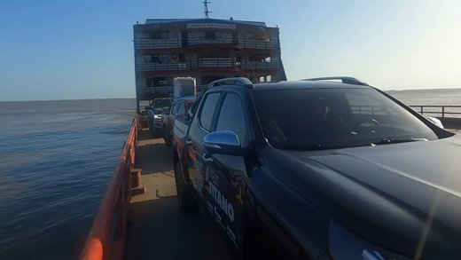

00:00:28.200
Fila de veículos no convés de uma balsa, com uma caminhonete em primeiro plano, água aberta à esquerda e a estrutura da embarcação ao fundo.
Rio Amazonas, travessia de Santarém para o porto da Vila Aninduba, PA · confirmado
A abertura apresenta a primeira etapa da viagem até Juruti, uma travessia de balsa pelo Amazonas. Em seguida, o apresentador relata a chegada ao porto de Aninduba antes do trecho rodoviário.
Transcrição · 00:00:00 | 00:00:24 | 00:00:38
Turismo Aqui — quadro de vídeo publicado no YouTube
Referência 1